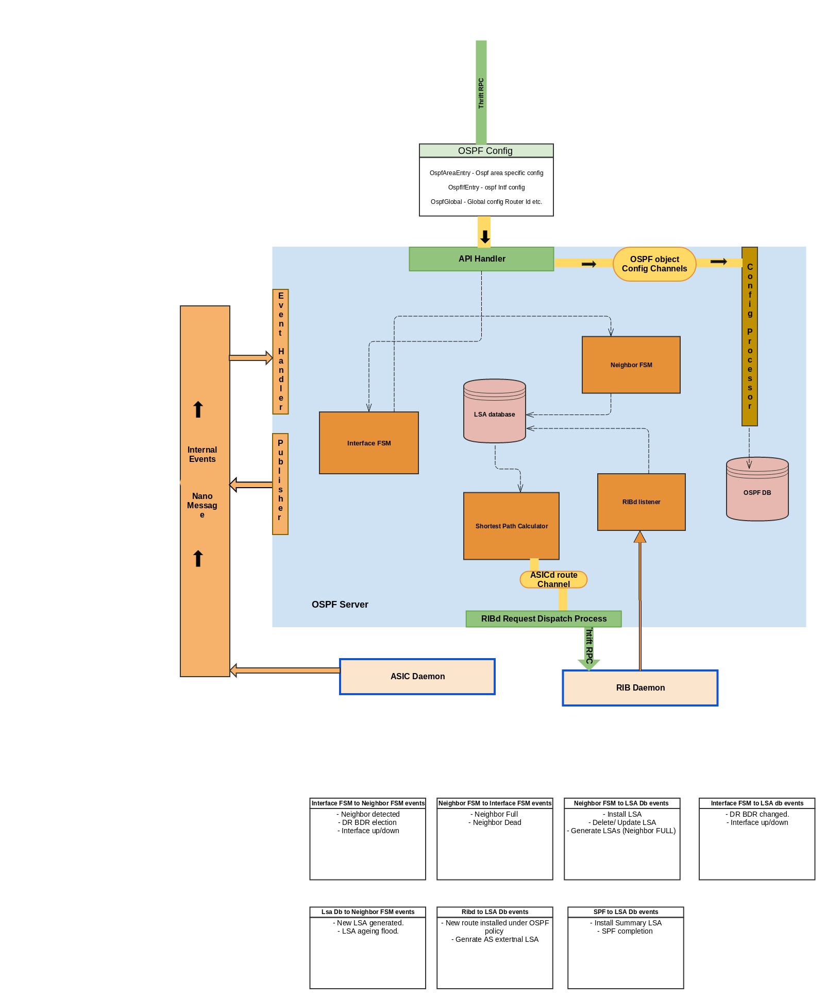

OSPF Architecture¶
Snaproute supports the OSPF implementation as per the RFC 2328. OSPF is composed of following building blocks.
Server¶
OSPF server provides interface to the config manager / thrift client to receive user configuration and pass it to the the different OSPF modules. It also takes care of spawning different go routines corresponding to each modules based on the configuration received.
Server listens to the below channels for different events
- GlobalConfigCh - Validate and process OSPF global configuration .
- AreaConfigCh - Process Area specific configuration.
- IntfConfigCh - Validate and process OSPF interface configuration.
- ribSubSocketCh - Process notifications from RIBd such as new route added/deleted .
Interface FSM¶
Interface FSM responds to the interface state changes. Each event leads to - different inputs to other state machines. Interface FSM listens to following events on the channel
- HelloIntervalTicker - With the default inerval 40 seconds is hit , FSM starts sending out Hello packets on this interface .
- BackupSeenCh - If the neighboring router declares itself as bdr/dr , this event triggers recalculation of the DR/BDR.
- NeighChangeCh - If neighbor goes to FULL state / or if neighbor is DEAD , interface FSM maintains metadata for each neighbor and accordingly trigger DR/BDR election .
- HelloPkt - Once hello packet is received , neighbor receives a message with neighbor’s data and 2 way status.
type IntfToNeighMsg struct {
IntfConfKey IntfConfKey
RouterId uint32
RtrPrio uint8
NeighborIP net.IP
nbrDeadTimer time.Duration
TwoWayStatus bool
nbrDR []byte
nbrBDR []byte
nbrMAC net.HardwareAddr
}
Along with above events interface FSM manages pcap handles for tx/rx for all packet types . IntfTxHandle
ospfIntfConf.go - Process received ospf interface config.
ospfIntfFSM.go - Heart of the interface FSM to handle all events.
ospfHello.go - Encode/decode Hello packets. Manage send/received hello packets.
ospfRxPkt.go - Receive all packets . Extract header info.
ospfTxPkt.go - Encode Hello packets and send them over pcap handle for each interface.
Neighbor FSM¶
Neighbor FSM module takes care of managing all neighbor events . Also maintains the neighbor data structure and flood related data.
Neighbor FSM handles below events
- Hello event from interface FSM - If the neighbor is not created add new neighbor , decide if the adjacency needs to be established. If yes initiate DB packet. Each neighbor struct is keyed with NeighborConfKey
- DB description packet received - Run different validations on the packet data. Advance the neighbor state based on the previous state . And send the next DB packet in the sequence.
Structure used to abstract DB packet;
- type ospfDatabaseDescriptionData struct {
options uint8
interface_mtu uint16
dd_sequence_number uint32
ibit bool
mbit bool
msbit bool
lsa_headers []ospfLSAHeader
}
- NbrFull - Initiate router (and Network) LSA generation .
- LSA packet received - Based on the packet type (UPDATE/REQ/UPDATE) neighbor FSM schedules flooding/sending LSA update packet or sending the ACK packet.
ospfNeighbor.go - This file implements main neighbor state machine and updates neighbor data structures.
ospfNeighborStruct.go - Defines all neighbor related data structures. Also init routines for FSM , different lists for neighbor FSM.
ospfDD.go - This file decodes/encodes DB description packets. Also extract LSA headers .
ospfLSAPkt.go - This file takes care of decoding received LSA packet. Perform LSA sanity checks. And send signal to LSA database to install the LSA. Also generate event for flooding module to generate flooding for eligible interfaces.
ospfFlooding.go - This file has all flooding related implementation .
Following are flooding events neighbor state machine handles
const (
LSAFLOOD = 0 // flood when FULL state reached
LSASELFLOOD = 1 // flood for received LSA
LSAINTF = 2 // Send LSA on the interface in reply to LSAREQ
LSAAGE = 3 // flood aged LSAs.
LSASUMMARYFLOOD = 4 //flood summary LSAs in different areas.
LSAEXTFLOOD = 5 //flood AS External summary LSA
)
LSA Database (LSDB)¶
Link state packets are saved in LSA database. The database is separated by AreaId and each LSA is keyed with LsaKey
type LsaKey struct {
LSType uint8
LSId uint32
AdvRouter uint32
}
Here are the events handled by LSDB over following channels
- LsdbUpdateCh - LSA is received over flooding. It has passed sanity checks , so LSDB needs to install it.
- IntfStateChangeCh - Generate Router LSA if interface is UP also trigger the SPF calculation if needed.
- NetworkDRChangeCh - Network DR/BDR changed. Generate network LSA if needed.
- CreateNetworkLSACh - When neighbor goes to FULL state . Update router LSA , generate network LSA if needed.
- ExternalRouteNotif - If the router is configured as ASBR , and receives external route , this event takes care of generating Type 5 LSA.
- maxAgeLsaCh - Process max age LSA. Send signal to flooding accordingly.
- lsdbTickerCh - Ticker for LSA age.
LSDB has a mechanism to age LSAs. and when LSA reaches to maxAge , the signal is sent to flooding module.
“StartCalcSPFCh” - When new LSA is installed , event is sent over this channel to trigger SPF calculation.
ospfLsdb.go - Add/delete/update LSAs in LSDB. Process different LSDB events.
ospfLSAPkt.go - Encode/decode LSA packets.
SPF¶
This module takes care of shortets path calculation .
ospfRoutingTbl.go - Routing table calculation.
Other modules¶
- ospfRibd.go - This module is the interface for RIBd. Based on the policy configured and ASBR status, this module receives routes from RIBd.
- ospfDB.go - Save the config to redis-server for OSPF restart support. Also update the LSA and Ospf Routes in the database.
- ospfBulkGet.go - Server implementation for bulk get requests.